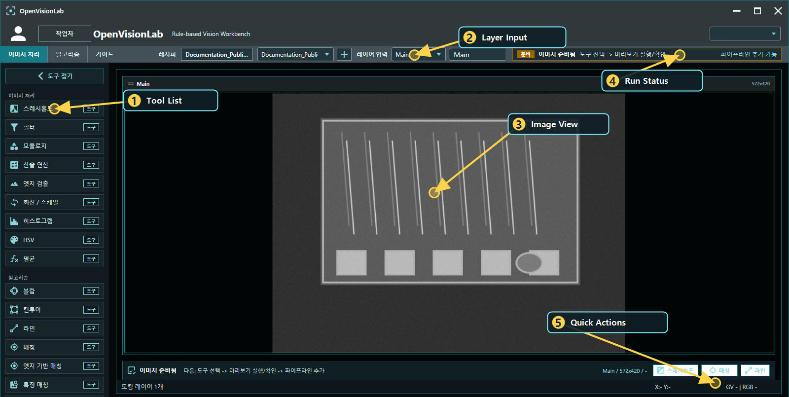
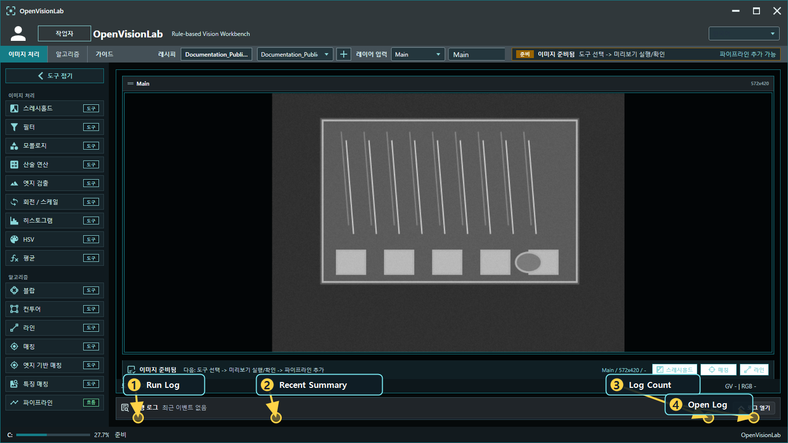
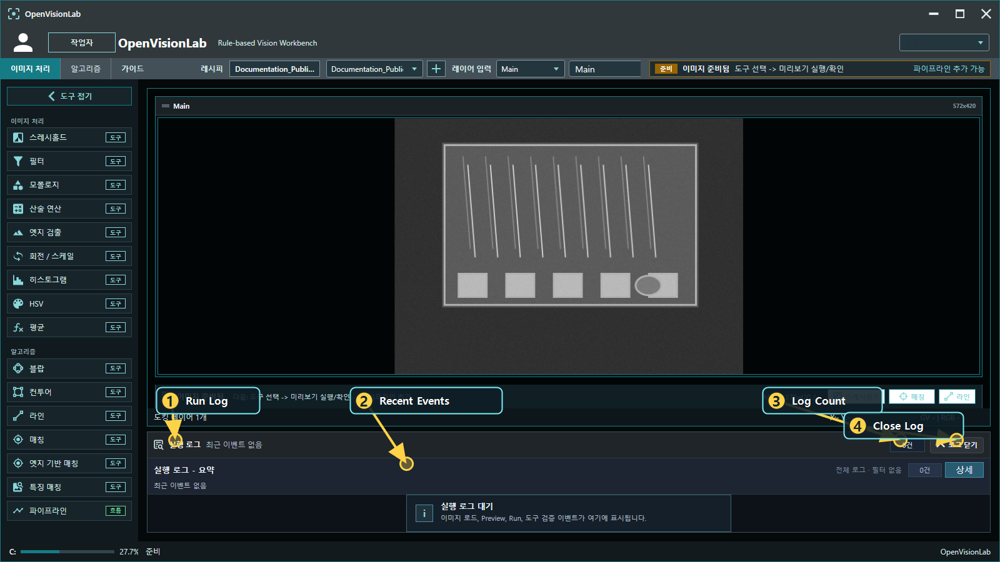
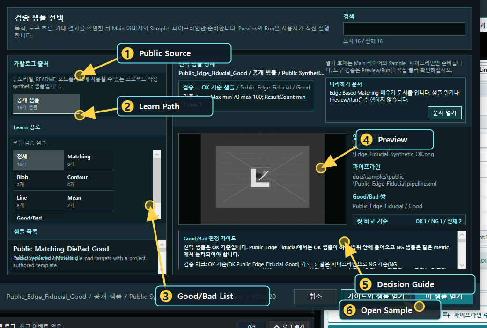
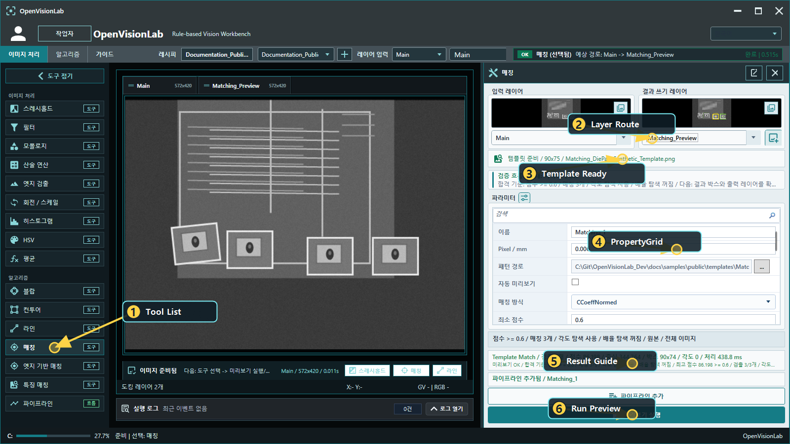
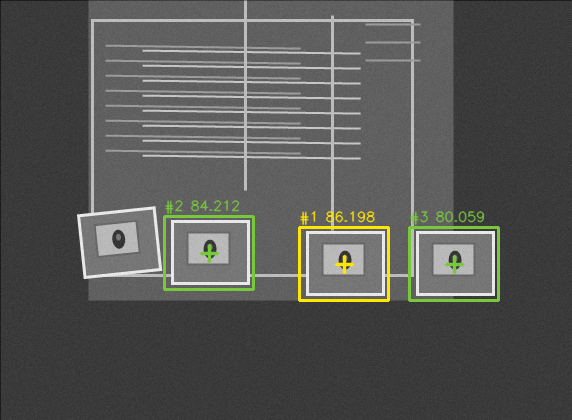
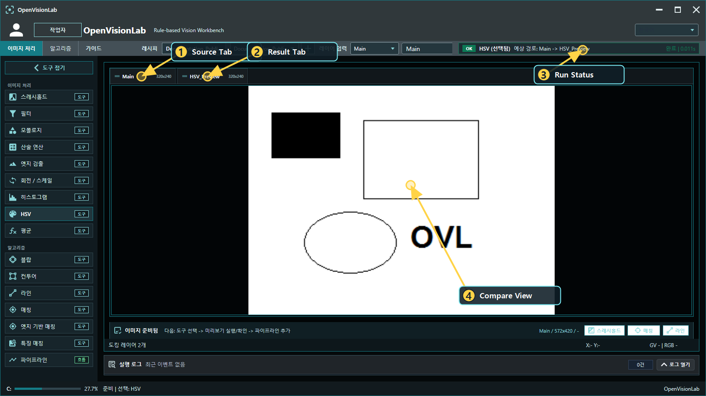
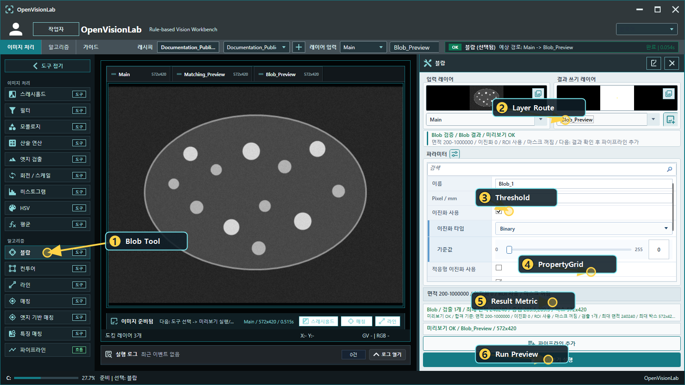
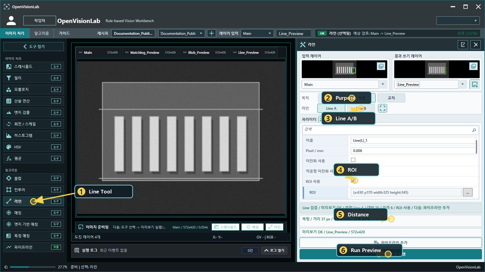
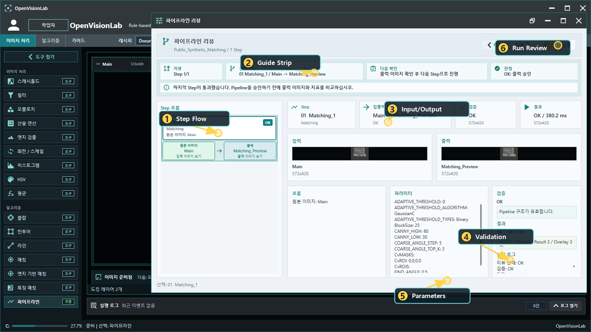

1. 화면 구성 보기
처음 화면은 Tool 목록, 이미지 workspace, Layer 입력, 실행 상태 영역으로 나누어 보면 이해하기 쉽습니다.
샘플 열기 -> Layer 확인 -> Tool 선택 -> Preview 실행 -> Output Layer 확인 -> Pipeline Review 실행 -> Good/Bad 샘플로 기준 확인

- Tool List: 사용할 Tool을 선택합니다.
- Layer Input: 기준 Layer를 확인합니다.
- Image View: 실제 이미지를 보고 위치를 확인합니다.
- Run Status: 실행 상태와 예상 output을 봅니다.
- Quick Actions: 현재 Layer에서 바로 실행할 수 있는 주요 Tool과 Pipeline 추가 흐름을 확인합니다.
실행 로그는 기본적으로 접힌 상태로 둡니다. 최근 상태만 보고 작업 공간을 넓게 쓰다가, 실패 원인이나 실행 이력이 필요할 때만 로그 열기로 펼쳐서 확인합니다.

- Run Log: 실행 이벤트를 모아 보는 영역입니다.
- Recent Summary: 최근 이벤트의 요약을 접힌 상태에서도 확인합니다.
- Log Count: 현재 표시되는 로그 개수를 확인합니다.
- Open Log: 상세 로그가 필요할 때만 펼칩니다.

- Run Log: 상세 실행 로그가 열린 상태입니다.
- Recent Events: 이미지 로드, Preview, Run, Tool 검증 이벤트를 확인합니다.
- Log Count: 필터링된 로그 개수를 봅니다.
- Close Log: 확인이 끝나면 다시 접어서 workspace를 넓게 씁니다.
2. 샘플로 시작하기
처음에는 직접 이미지보다 공개용 synthetic 샘플을 여는 것이 좋습니다. 샘플에는 이미지, 추천 Pipeline, expected metric, Good/Bad 기준이 함께 들어 있습니다.

- Public Source: 공개 튜토리얼에서 사용할 샘플 기준입니다.
- Learn Path: Matching, Blob, LineGauge, Good/Bad 비교처럼 흐름을 좁힙니다.
- Good/Bad List: 같은 Pipeline으로 비교할 샘플을 고릅니다.
- Preview: 선택한 샘플 이미지를 먼저 확인합니다.
- Decision Guide: 어떤 metric으로 OK/NG를 볼지 확인합니다.
- Open Sample: 샘플과 권장 Pipeline을 workspace에 엽니다.
| 배우고 싶은 내용 | Good 샘플 | Bad 샘플 | 보는 metric |
|---|---|---|---|
| Matching으로 대상 찾기 | Public_Matching_DiePad_Good | Public_Matching_DiePad_NoTarget_Bad | ResultCount, ScoreMax |
| Blob으로 여러 입자 세기 | Public_Blob_Particles_Good | Public_Blob_Particles_Sparse_Bad | ResultCount |
| Contour로 모양 개수 보기 | Public_Contour_Shapes_Good | Public_Contour_Shapes_Missing_Bad | ResultCount |
| Threshold로 밝은 pad 분리 | Public_Threshold_BandPads_Good | Public_Threshold_BandPads_Missing_Bad | ResultCount |
| Mean으로 밝기 drift 보기 | Public_Mean_Brightness_Good | Public_Mean_Brightness_Dark_Bad | MeanValueAvg |
| FeatureMatching 점수 비교 | Public_Feature_Card_Good | Public_Feature_Card_Wrong_Bad | ScoreMax, ResultCount |
| EdgeBasedMatching 형상 비교 | Public_Edge_Fiducial_Good | Public_Edge_Fiducial_Wrong_Bad | ScoreMax, ResultCount |
| LineGauge로 거리 보기 | Public_Line_Pins_Good | Public_Line_Pins_WidePin_Bad | DistanceMmAvg |
샘플을 열었다고 바로 Preview/Run이 실행되는 것은 아닙니다. Tool Preview나 Pipeline Review는 사용자가 직접 실행해야 결과가 계산됩니다.
툴별로 따라 할 때는 아래 Learn 문서를 먼저 보는 것이 좋습니다.
3. Matching 샘플 따라 하기
- Sample Catalog에서
Public_Matching_DiePad_Good를 선택합니다. - 샘플을 열어
MainLayer에 이미지가 들어왔는지 확인합니다. - Tool List에서 매칭을 선택합니다.
- Input Layer가
Main인지 확인합니다. - Output Layer를
Matching_Preview처럼 원본과 다른 이름으로 둡니다. - Template 준비 상태를 확인합니다.
- 미리보기 실행을 눌러 결과를 만듭니다.
- Output Layer와 overlay box가 실제 대상 위에 붙었는지 확인합니다.
- 괜찮으면 Pipeline Step으로 추가합니다.
- Pipeline Review에서 리뷰 실행을 눌러 같은 결과가 재현되는지 확인합니다.


Matching은 ScoreMax만 높다고 좋은 결과가 아닙니다.
ResultCount, Center, Box, Angle을 함께 보고 실제 대상 위치를 잡았는지 확인해야 합니다.
4. Tool View 공통 사용법
Tool View는 Input Layer, Output Layer, Preview, PropertyGrid, 결과 해석으로 구성됩니다. Tool의 세부 설정은 PropertyGrid 기반으로 유지됩니다.
- Input Layer가 맞는지 확인합니다.
- Output Layer를 원본과 다른 이름으로 지정합니다.
- PropertyGrid에서 파라미터를 조정합니다.
- 필요하면 Basic/Fast/Precise preset을 적용합니다.
- Preview 또는 Run을 명시적으로 실행합니다.
- 결과 image, overlay, metric을 확인합니다.
- 괜찮으면 Pipeline Step으로 추가합니다.
5. Layer를 보고 이해하기
OpenVisionLab은 원본, 전처리 결과, 최종 검출 결과를 Layer로 나누어 봅니다. 결과가 이상하면 최종 결과만 보지 말고 바로 이전 Layer를 같이 확인하는 것이 빠릅니다.
| 목적 | 이름 예시 |
|---|---|
| 원본 | Main |
| 이진화 결과 | Pin_Binary, Text_Binary |
| 노이즈 정리 | Pin_Clean, Text_Clean |
| 최종 검출 | PinShaft_Contour, BlobPair_Result |

6. Tool별 확인 포인트
Threshold
대상과 배경이 잘 분리되는지, 배경 noise가 과하지 않은지 확인합니다.
Blob
입자나 연결 객체를 세고 면적, box 크기, count를 확인합니다.
주요 metric: ResultCount, AreaMax, BoundsWidthAvg
Contour
외곽, 문자, 결함 후보를 찾습니다. ROI 전체가 잡히는지 특히 확인해야 합니다.
주요 metric: ResultCount, AreaMax, BoundsWidthMax
Pattern Matching / FeatureMatching
Template과 비슷한 대상을 찾습니다. Score만 보지 말고 crop과 overlay를 같이 봐야 합니다.
주요 metric: ScoreMax, ResultCount
EdgeDetection
Filter 이후 Canny 같은 edge image를 만들고, LineGauge나 surface defect 검사에 넘기는 전처리 Tool입니다.
LineGauge
Edge, 거리, 각도, 교차점 확인에 사용합니다. ROI와 scan direction이 중요합니다.
주요 metric: LineAngleAvg, DistanceMmAvg, LineLengthMax


7. Pipeline 만들기
Pipeline은 Tool을 순서대로 연결한 검사 Recipe입니다. 처음에는 짧은 흐름으로 시작하는 것이 좋습니다.
예시 1: Threshold -> Blob 예시 2: Threshold -> Morphology -> Contour 예시 3: Matching 예시 4: EdgeDetection -> LineGauge
- 첫 Tool에서 Input Layer를
Main으로 둡니다. - Output Layer를 원본과 다른 이름으로 둡니다.
- Preview로 결과를 확인합니다.
- 결과가 맞으면 Pipeline Step으로 추가합니다.
- 다음 Tool의 Input Layer는 이전 Output Layer로 선택합니다.
- 마지막에 Pipeline Review에서 전체 흐름을 다시 확인합니다.
8. Pipeline Review에서 결과 보기
Pipeline Review는 Recipe가 실제로 어떤 Step에서 어떤 이미지를 읽고 쓰는지 확인하는 화면입니다.
01 Threshold: Main -> Text_Binary 02 Morphology: Text_Binary -> Text_Clean 03 Contour: Text_Clean -> Text_Contour
의도적으로 다시 Main을 읽는 Step은 branch입니다. Branch 자체는 문제가 아니지만, 사용자가 그 이유를 알고 있어야 합니다.

- Step Flow: Tool 연결 순서를 봅니다.
- Guide Strip: 현재 단계에서 무엇을 확인해야 하는지 안내를 봅니다.
- Input/Output: 현재 Step의 Layer route를 확인합니다.
- Validation: OK/NG 기준과 통과 여부를 봅니다.
- Parameters: 실제 실행에 사용된 Tool 파라미터를 확인합니다.
- Run Review: Review 실행은 명시적으로 선택합니다.
NG 원인: Result Count 측정값: 28 목표: 120 - 170 해석: 검출은 되었지만 정상 particle density보다 적음
9. Good/Bad 샘플로 기준 잡기
룰베이스 검사는 정상 이미지에서 OK가 나오는 것만으로 부족합니다. 불량 이미지에서 어떤 metric이 벗어나는지도 같이 확인해야 합니다.
| Public Pair | Good 기준 | Bad에서 보는 것 |
|---|---|---|
| Matching die pad | template 대상 3개 검출 | no-target 이미지에서 ResultCount=0 |
| Blob particles | 입자가 충분히 많이 검출됨 | sparse 이미지에서 ResultCount 낮음 |
| Contour shapes | 5개 shape 검출 | missing-shape 이미지에서 ResultCount=2 |
| Threshold band pads | 밝은 pad 4개 분리 | missing-pad 이미지에서 ResultCount=1 |
| Mean brightness | 평균 밝기가 정상 band 안에 있음 | dark 이미지에서 MeanValueAvg 낮음 |
| Feature card | feature score가 기준 이상 | wrong card에서 ScoreMax 낮음 |
| Edge fiducial | edge fiducial 1개 검출 | wrong fiducial에서 ResultCount=0 |
| Line pins | pin 간격이 정상 범위 | wide-pin 이미지에서 DistanceMmAvg 낮음 |
Bad 샘플 중 일부는 controlled NG입니다. Tool은 결과 이미지를 만들 수 있지만 acceptance metric이 기준을 벗어나 Pipeline Review에서 NG로 표시됩니다.
10. Recipe 저장과 전환
검증된 Pipeline은 XML Recipe로 저장합니다. Recipe를 저장하기 전에 최소한 하나의 Good 샘플과 하나의 Bad 샘플로 확인하는 것이 좋습니다.
- 현재 Pipeline이 원하는 Layer 흐름인지 확인합니다.
- Good 샘플에서 OK가 나오는지 확인합니다.
- Bad 샘플에서 어떤 metric이 기준 밖으로 나가는지 확인합니다.
- Recipe 이름을 검사 목적이 드러나게 저장합니다.
- Recipe를 전환한 뒤 Tool 파라미터와 Layer route가 해당 Recipe 기준으로 바뀌는지 확인합니다.
11. 문제가 생겼을 때 보는 순서
- 현재 보고 있는 Layer가 맞는지 확인합니다.
- Tool의 Input Layer가 맞는지 확인합니다.
- Output Layer가 비어 있거나 다른 결과로 덮이지 않았는지 확인합니다.
- Preview/Run을 실제로 실행했는지 확인합니다.
- Threshold 결과가 대상과 배경을 잘 나누는지 봅니다.
- Morphology에서 객체가 사라지거나 붙지 않았는지 봅니다.
- Blob/Contour의 area 조건이 너무 좁거나 넓지 않은지 봅니다.
- Matching template이 너무 크거나 배경을 많이 포함하지 않는지 봅니다.
- ROI가 너무 넓어 후보가 많아지지 않았는지 봅니다.
- Pipeline Review의 NG metric과 목표 범위를 확인합니다.
12. 추천 학습 순서
- public synthetic Matching 샘플로 template matching 결과를 봅니다.
- public synthetic Blob 샘플로 Blob count 흐름을 봅니다.
- public synthetic LineGauge 샘플로 ROI와 distance 결과를 봅니다.
- public synthetic Good/Bad pair로 controlled NG를 확인합니다.
- 직접 이미지를 불러와 같은 흐름을 적용합니다.
- Pipeline XML을 저장합니다.
- Pipeline Review에서 다시 검증합니다.
13. 정리
OpenVisionLab을 사용할 때는 이미지를 처리한다는 관점보다 검사 기준을 만든다는 관점으로 보는 것이 좋습니다.
- Input Layer와 Output Layer가 분리되어 있습니다.
- Preview/Run은 사용자가 명시적으로 실행합니다.
- Tool 설정은 PropertyGrid 기반 Recipe 상태로 남습니다.
- OK/NG는 image, overlay, metric, log로 설명되어야 합니다.
- Good/Bad pair에서 같은 기준이 반복해서 설명되어야 합니다.